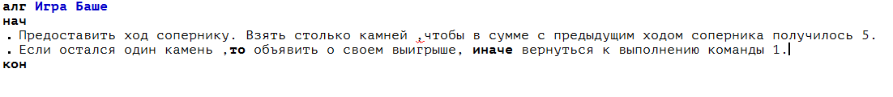

Определение и свойства алгоритма
Само слово «алгоритм» происходит от имени выдающегося математика средневекового Востока Мухаммеда ибн Мусы аль-Хорезми (787 - 850 г.). Им были предложены приемы выполнения арифметических вычислений с многозначными числами (вам они хорошо знакомы из школьной математики). Позже в Европе эти приемы назвали алгоритмами, от Algorithmi — латинского написания имени аль-Хорезми. В наше время понятие алгоритма понимается шире, не ограничивается только арифметическими вычислениями.
Из предыдущего параграфа вы узнали, что алгоритм — это последовательность команд управления каким-либо объектом. Мы назвали такой объект объектом управления или исполнителем алгоритма. Им может быть как техническое устройство, так и живое существо.
Рассмотрим исполнителя — человека. Для него можно сформулировать множество алгоритмов, например алгоритмы арифметических вычислений. С таким же успехом можно назвать алгоритмами множество различных инструкций, предписывающих последовательность действий человека для выполнения какой-либо работы. Например, кулинарный рецепт — это алгоритм работы повара с целью приготовления блюда; инструкция по сборке машинки из деталей детского конструктора — алгоритм для ребенка; инструкция по использованию кухонного комбайна — алгоритм для домохозяйки.
Вы, наверное, никогда не задумывались над тем, какое количество алгоритмов вам известно. Жизненный опыт человека растет с увеличением числа освоенных им алгоритмов. Например, чтобы ребенок научился покупать в магазине хлеб, ему нужно сначала рассказать (а лучше показать), как это делается. Освоив «алгоритм покупки хлеба», он в дальнейшем будет успешно выполнять эту работу.
Поиск выигрышной тактики, а следовательно, и алгоритма несложной игры — интересная и полезная задача. Рассмотрим одну из таких игр, которая называется игрой Баше.
Играют двое. Перед ними 21 предмет, допустим, камни (также может быть 11, 16, 26 и т. д.). Игроки берут камни по очереди. За один ход можно взять 1, 2, 3, 4 камня. Проигрывает тот, кто забирает последний камень.
Имеется выигрышная тактика для игрока, берущего камни вторым. Она заключается в том, чтобы брать такое количество камней, которое дополняет число камней, взятых соперником на предыдущем ходе, до пяти. Этот алгоритм можно описать в виде последовательности команд:
Игрок, строго следующий этому алгоритму, будет всегда выигрывать, даже если он не понимает, почему так происходит.
В приведенном примере записи алгоритма используется символика учебного Алгоритмического языка (АЯ).
Из примера видно, что при записи алгоритма на АЯ вначале пишется заголовок, начинающийся со служебного слова алr (сокращенное слово «алгоритм»). Затем указывается название алгоритма, которое составитель алгоритма придумывает сам. Следующая часть называется телом алгоритма. Она начинается со служебного слова нач (начало) и заканчивается словом кон (конец). Тело алгоритма представляет собой последовательность команд для исполнителя.
Здесь и в дальнейшем служебные слова в алгоритмах на алгоритмическом языке будут записываться жирным шрифтом. В языках программирования (как и в АЯ) служебными называются слова, которые всегда употребляются в одном и том же смысле.
Процесс решения задачи должен быть разбит на последовательность отдельно выполняемых шагов.
Это свойство алгоритма называется дискретностью.
Всякий алгоритм составляется в расчете на конкретного исполнителя с учетом его возможностей. Для того чтобы алгоритм был выполним, нельзя включать в него команды, которые исполнитель не в состоянии выполнить. Нельзя повару поручать работу токаря, какая бы подробная инструкция ему ни давалась. У каждого исполнителя имеется свой перечень команд, которые он может исполнить. Такой перечень называется системой команд исполнителя алгоритмов (СКН).
Алгоритм, составленный для конкретного исполнителя, должен включать только те команды, которые входят в систему команд исполнителя.
Это свойство алгоритма называется понятностью.
Алгоритм не должен быть рассчитан на принятие каких-либо самостоятельных решений исполнителем, не предусмотренных составителем алгоритма.
Каждая команда алгоритма должна определять однозначное действие исполнителя.
Это свойство алгоритма называется точностью.
Исполнение алгоритма должно завершиться за конечное число шагов.
Это свойство алгоритма называется конечностью.
Для успешного выполнения любой работы мало иметь ее алгоритм. Всегда требуются еще какие-то исходные данные, с которыми будет работать исполнитель (продукты для приготовления блюда, детали для сбора технического устройства и т. п.). Исполнителю, решающему :математическую задачу, требуется исходная числовая информация. Задача всегда формулируется так: дана исходная информация, требуется получить какой-то результат. В математике вы привыкли в таком: виде записывать условия задач. Например:
Каждую из этих команд может выполнить любой человек, знающий основы математики, следовательно, они входят в его систему команд.
Еще пример: для поиска номера телефона нужного вам человека исходными данными являются: фамилия, инициалы человека и телефонная книга (точнее, информация, заключенная в телефонную книгу). Однако этого может оказаться недостаточно. Например, вы ищете номер телефона Смирнова А. И. и обнаруживаете, что в книге пять строк с фамилией «Смирнов А. И». Ваши исходные данные оказались неполными для точного решения задачи (вместо одного номера телефона вы получили пять). Оказалось, что нужно знать еще домашний адрес.
Набор: «Фамилия — инициалы — телефонный справочник – адрес» является полным набором данных в этой ситуации.
Только имея полный набор данных, можно точно решить задачу.
Если исходные данные неполные, то задачу, либо совсем нельзя решить (ничего нельзя узнать про гипотенузу по одному катету), либо получается неоднозначное решение (пять номеров телефонов).
В задачах управления физическими объектами (автомобиль, самолет, станок и т. п.) исходными данными является информация о состоянии объекта управления, об обстановке, его окружающей.
Обобщая все сказанное, сформулируем определение алгоритма.
Алгоритм — понятное и точное предписание исполнителю выполнить конечную последовательность команд, приводящую от исходных данных к искомому результату.
Если алгоритм обладает перечисленными выше свойствами, то работа по нему будет производиться исполнителем формально (т. е. без всяких элементов творчества со стороны исполнителя). На этом основана работа программно управляемых исполнителей-автоматов, например промышленных роботов. Робот-манипулятор может выполнять работу токаря, если он умеет выполнять все операции токаря (включать станок, закреплять резец, перемещать резец, замерять изделие). От исполнителя не требуется понимания сущности алгоритма, он должен лишь точно выполнять команды, не нарушая их последовательности.
А что такое программа? Отличается ли чем-то программа от алгоритма?
Программа — это алгоритм, записанный на языке исполнителя.
Иначе можно сказать так: алгоритм и программа не отличаются по содержанию, но могут отличаться по форме.
Для алгоритма строго не определяется форма его представления. Алгоритм можно изобразить графически, можно — словесно, можно — какими-нибудь специальными значками, попятными только его автору. Но программа должна быть записана на языке исполнителя.
-Слово «алгоритм» происходит от имени Мухаммеда ибн Мусы аль-Хорезми, первым предложившего приемы выполнения арифметических операций с многозначными числами.
-Исполнитель алгоритма — это тот объект, для управления которым составлен алгоритм.
-Процесс решения задачи должен быть разбит на последовательность отдельных шагов (свойство дискретности алгоритма).
-Система команд исполнителя (СКИ) — это вся совокупность команд, которые исполнитель умеет выполнять (понимает). Алгоритм можно строить только из команд, входящих.
-Каждая команда алгоритма управления должна определять однозначное действие исполнителя (свойство точности алгоритма).
-Выполнение алгоритма должно приводить к результату за конечное число шагов (свойство конечности алгоритма).
-Для успешного выполнения работы, решения задачи необходимо сообщить (передать) исполнителю полный набор исходных данных.
-Выполнение алгоритма исполнителем производится формально.
-Программа от алгоритма может отличаться по форме, но не по содержанию. Программа — это алгоритм, представленный на языке исполнителя.
Что такое алгоритм?
Что такое исполнитель алгоритма?
Каковы основные свойства алгоритма?
Что такое программа?
Назовите исполнителей следующих видов работы: уборки мусора во дворе; перевозки пассажиров; выдачи заработной платы; приема экзаменов; сдачи экзаменов; обучения детей в школе.
Попробуйте сформулировать СКИ для каждого из этих исполнителей.
Определите полный набор данных для решения следующих задач обработки информации:
1)вычисления стоимости покупок в магазине;
2)вычисления суммы сдачи от данных вами продавцу денег;
3)определения времени показа по телевизору интересующего вас фильма;
4)вычисления площади треугольника;
5)определения времени падения кирпича с крыши дома;
6)определения месячной платы за расход электроэнергии;
7)перевода русского текста на итальянский язык
8)перевода итальянского текста на русский язык.
Попробуйте сформулировать алгоритмы обработки информации для заданий, если исполнителем являетесь вы сами. Какие команды при этом вы должны уметь выполнять?